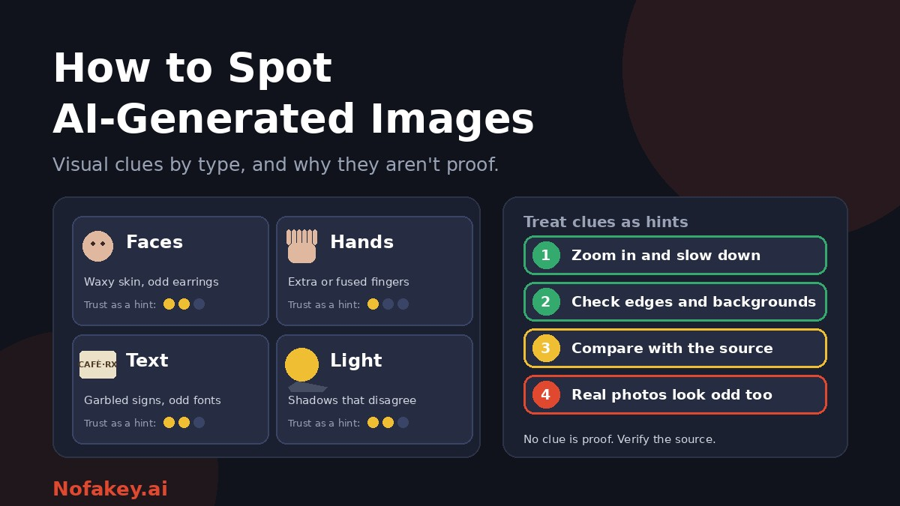

Extra fingers, melted jewellery, signs full of nonsense letters. For a while these clues made AI images easy to catch. Now the picture is more complicated: some generators have fixed the obvious flaws, and some real photos look strange because of filters and compression. Visual clues can still help, but only if you know how to use them and how far to trust them. This guide covers what to look for, by area and by image type, and what has stopped working.
Three honest warnings before you start
- Clues fade. Generators improve quickly. A flaw that gave images away last year may be rare now, so a "normal" detail tells you little.
- Real photos can look odd. Beauty filters, heavy retouching, HDR, panoramas, odd lenses and compression produce smooth skin, strange edges and unusual lighting.
- Many images are mixed. A real photo can have an AI-made background, object or text added. Parts may look right while one corner is not.
How to inspect an image properly
- Get the largest version you can. Small, compressed copies hide clues.
- First impression, then detail. Look at the whole image, then slow down. Many oddities are invisible at a glance.
- Zoom in on one area at a time: faces, hands, text, then edges and backgrounds.
- Follow the light. Where is it coming from? Do shadows and reflections agree?
- Check the edges. Look where hair, clothing and objects meet the background for smudges, halos and blending.
- Look at the unimportant parts. Background people, signs, windows and small objects get less "attention" from generators.
- Compare with real photos of the same subject. Does the place, product or uniform look like the real thing?
- Write down what you notice, then move on to source and context checks.
Clues by area, and how far to trust them
| Area | What to look for | Trust level | Why it can mislead |
|---|---|---|---|
| Skin and faces | Waxy or airbrushed skin, no pores, unnaturally even tone | Low to moderate | Beauty filters and retouching do the same |
| Eyes and teeth | Mismatched reflections in the eyes, uneven pupils, teeth that blur together | Moderate | Flash and low resolution create odd eyes too |
| Hair | Strands that merge into the background or clothing, hair growing from hats | Moderate | Compression can smear hair |
| Hands and fingers | Extra, fused or bent fingers, odd grips on objects | Low | Much improved, so normal hands prove little |
| Jewellery, glasses, clothing | Earrings that do not match, glasses that melt into the face, patterns that change | Moderate | Real photos can be asymmetrical |
| Text and logos | Garbled letters, nonsense words, fonts that shift mid-word | Moderate | Improving, and short clean text may be fine |
| Lighting and shadows | Shadows pointing different ways, subject lit differently from the background | Moderate | Studio lighting and composites exist in real photography |
| Reflections | Mirrors, windows and water showing something that does not match the scene | Moderate | Hard to judge in cluttered scenes |
| Backgrounds and crowds | Warped buildings, faces that blur together, repeated patterns, impossible objects | Moderate | Wide lenses and panoramas distort real scenes |
| Perspective and proportions | Lines that do not meet, objects that are the wrong size | Low to moderate | Lens distortion can mimic it |
| The "too perfect" feel | Glossy, symmetrical, dreamlike finish | Low | Many real photos are heavily processed |
What to look for by image type
| Image type | Focus on |
|---|---|
| Portraits and profile photos | Skin texture, eye reflections, earrings and glasses, hair edges, a blurry background that melts into the subject. For dating or social profiles, also reverse search the photo. See deepfake romance scams |
| Group photos and crowds | Faces in the background, repeated people, hands holding hands, odd numbers of limbs |
| Landscapes and travel photos | Repeating trees or clouds, impossible geography, unnaturally saturated colour, lighting that is too even |
| Product and ad photos | Logos and labels, how parts connect, reflections, and whether the product matches the seller's other photos. See how to check if a website is AI-generated |
| Food photos | Textures that are too perfect, utensils and glasses that merge with the food, menu text |
| Art and illustrations | Garbled signs or speech bubbles, inconsistent line style, details that blend together |
| News and event photos | Context first. Look for other photos of the same event and the original photographer. See how journalists verify images |
Clues that are outdated or misleading
- "AI always gets hands wrong." Not any more. Many images have convincing hands.
- "AI is always too perfect." Some outputs are deliberately rough or imitate phone snapshots.
- "Blurry means fake" or "sharp means real." Neither is reliable.
- "No watermark means real." Many AI images carry no visible mark, and visible marks can be cropped out.
- "Low resolution is suspicious." Screenshots and reposts are often low resolution.
- "I have a good eye." Studies of people trying to spot fakes suggest most of us overestimate our ability, so use a process, not confidence.
When real photos look fake
| Cause | What it can look like |
|---|---|
| Beauty and retouching filters | Plastic skin, enlarged eyes, smooth edges |
| Portrait mode and background blur | Hair and edges that melt into the background |
| HDR and heavy editing | Glowing, over-even light and odd colours |
| Panoramas and wide-angle lenses | Stretched people, warped buildings |
| Heavy compression and reposting | Blocky patches, smeared faces and text |
| Old film or low-quality cameras | Strange colour, noise and softness |
That is why one oddity should make you curious, not certain.
A quick checklist
Count what you notice. This is a thinking aid, not a scientific test.
- None or one small oddity: you have learned very little. Move on to source and context checks.
- Two or three oddities in different areas: raise your suspicion, and do not share until you have verified it.
- Several clear problems, such as text, hands and lighting together: likely synthetic or heavily edited, but still look for the source.
- An oddity in only one corner: consider a partial edit, where only part of the image was changed.
After the visual check: what to do next
- Trace the source. Who posted it first, and can you find the original file?
- Look for content credentials. If present and valid, they are a strong signal. If missing, you learn nothing.
- Run a reverse image search to find earlier versions or copies labelled as AI.
- Check the context. Does the place, date and story fit, and does anyone reliable report the same event?
- Use a detector as one more clue. See free AI image detector online and free online deepfake detector tools.
Our full method is in how to check if a photo is AI-generated.
Getting better at it
- Practise on examples where the answer is revealed, such as quizzes and spot-the-difference exercises, and notice what you got wrong.
- Study real photos too. Knowing what genuine noise, blur and asymmetry look like helps you judge oddities.
- Teach the habit, not the tells. For classrooms, see how to teach students to spot AI content.
- Stay humble. New tools change the clues, so update what you look for.
If you publish images
Do not rely on the audience to spot your AI images. Label them clearly, and keep your originals and editing records. See how to label AI-generated content. If a link or message that came with an image looks suspicious, paste it into our free checker for a quick first read. It is not an image detector, so use it only for the message, claim or link.
Conclusion
Visual clues can still help you notice that something is off, especially in text, lighting, reflections, edges and backgrounds. But they fade as tools improve, and real photos can look strange too. Slow down, zoom in, count what you see, and then verify with the source, content credentials, a reverse image search and context. When you cannot tell, treat the image as unverified. Find more guides on the Nofakey.ai blog.
Frequently asked questions
What are the most common signs of an AI-generated image?
Common signs include odd hands and fingers, garbled or inconsistent text, lighting and shadows that disagree, unnaturally smooth skin, mismatched accessories, and warped or repeated background details. None is proof on its own.
Do AI images still get hands wrong?
Sometimes, but much less than before. Many newer images have convincing hands, so a normal-looking hand tells you very little.
Can a real photo look AI-generated?
Yes. Heavy retouching, beauty filters, HDR, compression and unusual lenses can create smooth skin, odd edges and strange lighting, so visual clues can produce false alarms.
What should I do if I find no visual clues?
That does not mean the image is real. Check the source, content credentials, a reverse image search and the context before trusting it.
How can I get better at spotting AI images?
Slow down, zoom in, look at edges and backgrounds, compare with real photos of the same subject, and practise on examples where the answer is revealed. Keep in mind that clues keep changing as tools improve.
Got a suspicious link, offer or message to check?
Run it through the checker